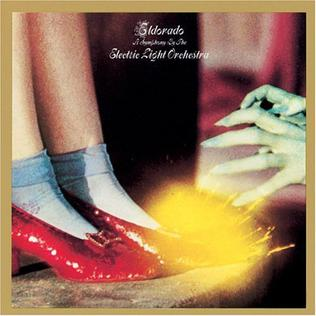
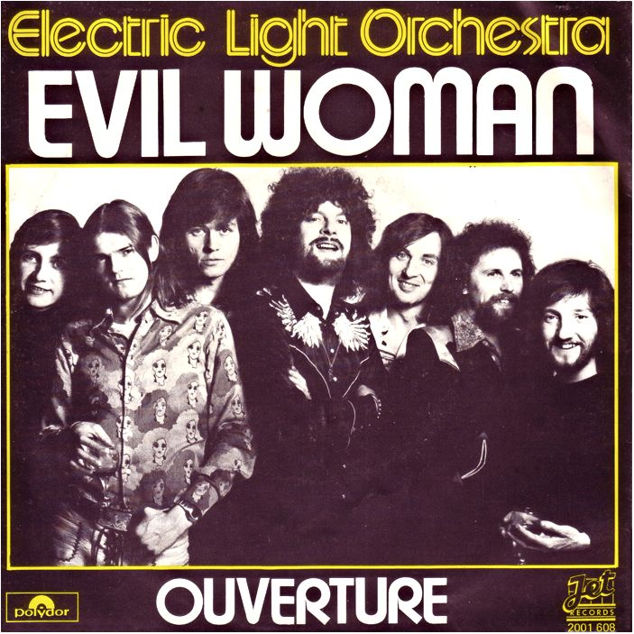
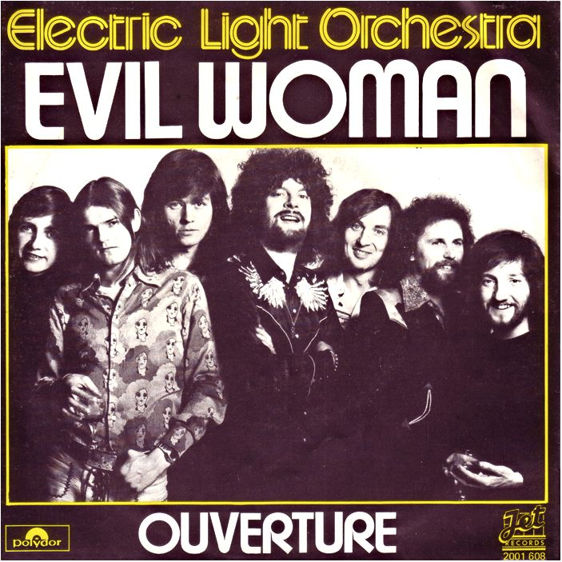
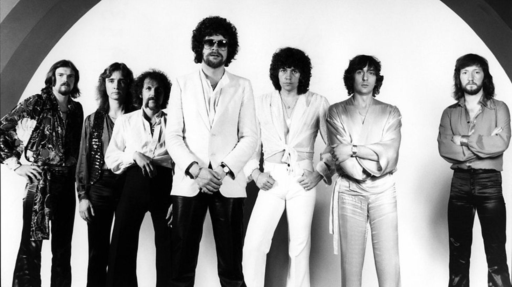

The Evolution of ELO: A Journey Through Sound
Electric Light Orchestra was formed in 1970 by Jeff Lynne, Roy Wood, and Bev Bevan. The band set out to combine the depth and complexity of classical music with the energy of rock and roll. From their early albums, ELO pushed boundaries with the use of orchestral strings, layered harmonies, and synthesizers, defining their signature sound.
.jpeg)
Key Milestones in ELO's History
1973: Breakthrough album “Eldorado,” the first to feature a full orchestra.



977: Release of the multi-platinum album “Out of the Blue,” which solidified ELO as international superstars with tracks like "Mr. Blue Sky."
Jeff Lynne’s Musical Vision: Rock Meets Symphony
Jeff Lynne is a visionary who seamlessly merged the grandeur of classical music with the raw energy of rock. He drew inspiration from The Beatles and classical composers like Beethoven and Tchaikovsky to create a sound that was cinematic yet electrifying.
Classic ELO Sound Elements:
String sections in songs like “Livin’ Thing” and “Evil Woman” that evoke a full symphonic feel.
.jpeg) 

The use of classical instruments like the cello and violin, integrated into rock structures.
To conclude, Electric Light Orchestra (ELO) represents a groundbreaking fusion of classical music and rock, orchestrated by the visionary Jeff Lynne. From their formation in 1970, ELO has consistently pushed musical boundaries by blending lush orchestral arrangements with the electrifying energy of rock, creating timeless anthems like "Mr. Blue Sky" and "Evil Woman." Their influence spans decades, with Lynne’s unique ability to harmonize the cinematic grandeur of classical compositions with the modern sensibilities of rock. As they embark on their final tour in 2024, ELO leaves behind a lasting legacy, forever changing the landscape of music. This tour not only marks the end of an era but celebrates the timeless artistry that has made ELO a beloved name across generations.